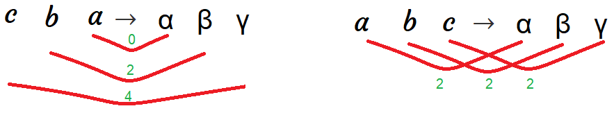

Seq2Seq
Sequence-to-sequence (seq2seq) models or encoder-decoder architecture, created by IlyaSutskever and published in their paper: Sequence to Sequence Learning with Neural Networks published in 2014, have enjoyed great success in a machine translation, speech recognition, and text summarization.
When training, Seq2Seq system first reads the source sentence using a neural network called “encoder” to build a context Vector (the last RNN output in the encoder architecture) which is a sequence of numbers that represents the sentence meaning. Then using another neural network called “decoder” which takes the translated words along with the context vector and tries to train the decoder to predict these words when given similar context vector.

Note:
We should know that the input to both the encoder and the decoder are word-embedding and not the word itself. So, when translating from one language to another, you need to have two sets of word embedding.
When testing, we only have the input sentence for the encoder. So, we use the encoder architecture to generate the context vector that will be used as the initial state for the decoder architecture to generate the translated sentence.
And as we can see in the following image, the output of each time step in the decoder will be fed back to it the decoder to generate more. And each word generated has the highest probability among all other words in the vocabulary.
Notes:
- One of the tricks that we usually use in Machine Translation, and it helps to improve the performance, is to reverse the input sentence when training the model. So, if the (English, Foreign) pair is “a b c” → “α β γ”, then we reverse the source sentence and keep the target as it is. So, now the (English, Foreign) pair is “c b a” → “α β γ”. This increases the performance as the distance between the associated words become lower than before and the average distance between corresponding words in the source and target is unchanged.

The trend in NMT is not using so much epochs in training. The seq2seq paper mentioned before uses 7.5 epochs for training $12$ million sentences containing 348 million English words and 304 million French words. And the “Effective Approaches to Attention-based Neural Machine Translation” paper used about 12 epochs.
There is a trick we can use that doubles the training speed which is when creating mini-batches, we batch the short sentences (< 30 words) together and the long sentences together. Padding is also added per batch.
Some people would train the encoder and the decoder separately. You can do that with no problem, but it’s preferable to train them altogether as an end-to-end solution.
One of the biggest problems we should avoid when creating such a model is to avoid the greedy approach when dealing with the generated sentence. By greedy approach, I mean choosing every word based on current word probability without putting into consideration the following words. That’s why we will stick with another approach which is the “Beam Search”.
Different Layers
In this part, we are going to discuss a very special case in a Seq2Seq architecture, but first let’s recap its architecture. Seq2Seq system first reads the source sentence using a neural network called “encoder” to build a context vector(s). These vectors are being used as the initial value for the hidden states in the decoder. The decoder is another neural network that uses the context vector(s) to emit a translation, word by word.
In the previous graph, the number of layers in the encoder is the same as the decoder. But what happens when the number of layers differ between them. How we are going to use the context vector(s) as the initial value for the decoder? According to this answer on Quora, there are two approaches:
- Use a single layer fully connected (FC) network between the encoder and decoder. The FC network has (encoder layers) number of input neurons and (decoder layers) number of output/hidden layer neurons. This way the sizes of the encoder and decoder would be reconciled and you can initialize the decoder hidden states from the output of FC network.
- Use the encoder hidden state output as an extension to the decoder input and initialize the decoder hidden states randomly. This technique is used in papers like: A Persona-Based Neural Conversation Model.
Beam Search
The difference between Beam Search and Greedy Algorithm is that the first chooses a certain number of candidates for each step (based on the beam width) unlike the latter which chooses only the most likely candidate for each step. So, we can consider the greedy algorithm as a beam search algorithm with a beam width of 1. Let’s see how we can do that with our example, “Jane visite l’Afrique en septembre”, step by step. First, we will form our encoder network like so:
Using a beam width of $3$, we will choose the most likely three words from our vocabulary based on the context vector (Blue). In other words, we will get the three words that has the highest $P\left( y^{\left\langle 1 \right\rangle} \middle| x \right)$ where $x$ is the context vector (Blue block). Let’s assume the most likely words are “In”, “Jane” and “September”. Now, we will have to create three decoder networks, one for each word like so:
And for each choice of these three choices, we will consider what should be the second word. We will also get the three most likely words according to the probability $P\left( y^{\left\langle 2 \right\rangle} \middle| x,y^{\left\langle 1 \right\rangle} \right)$. So, we will have $3 \ast 3 = 9$ choices for the second step. Then, we will filter it down to 3 by considering the highest three probabilities of these nine choices. And we will keep doing that till the end of the generated (translated) sentence. If the end of sentence symbols </s> is generated to one of the choices, then we stop generating words in this choice.
So in the end, the Beam Search Algorithm will produce the sentence with the highest probability of $P\left( y^{\left\langle 1 \right\rangle}\ldots y^{\left\langle T_{x} \right\rangle} \middle| x \right)$ which equal to $P\left( y^{\left\langle 1 \right\rangle} \middle| x \right) \ast P\left( y^{\left\langle 2 \right\rangle} \middle| x,y^{\left\langle 1 \right\rangle} \right) \ast P\left( y^{\left\langle 3 \right\rangle} \middle| x,y^{\left\langle 1 \right\rangle},y^{\left\langle 2 \right\rangle} \right) \ast \ldots P\left( y^{\left\langle T_{y} \right\rangle} \middle| x,y^{\left\langle 1 \right\rangle},\ldots y^{\left\langle T_{y} - 1 \right\rangle} \right)$. In other words, the Beam Search Algorithm tries to maximize:
\[\arg\max_{y}\prod_{t = 1}^{T_{y}}{P\left( y^{\left\langle T_{y} \right\rangle} \middle| x,\left\{ y^{\left\langle 1 \right\rangle},\ldots y^{\left\langle T_{y} - 1 \right\rangle} \right\} \right)}\]One way to optimize the previous formula is to use the logarithmic summation instead of the product. So, by taking logs, we end up with a more numerically stable algorithm that is less prone to numerical rounding errors:
\[\arg\max_{y}\sum_{t = 1}^{T_{y}}{\log\left( P\left( y^{\left\langle T_{y} \right\rangle} \middle| x,\left\{ y^{\left\langle 1 \right\rangle},\ldots y^{\left\langle T_{y} - 1 \right\rangle} \right\} \right) \right)}\]Now, there's one other change to this function that makes the machine translation algorithm work even better. If we have a very long sentence, the probability of that sentence is going to be small, because we’re multiplying as many terms with numbers where all of them are less than 1.
So, if we multiply all the numbers that are less than 1 together, we just tend to end up with a smaller probability. That’s why the Beam Search prefers short sentences. To avoid that, we modify the former equation and divide by the length of the sentence like so:
\[\frac{1}{T_{y}^{\alpha}} \ast \arg\max_{y}\sum_{t = 1}^{T_{y}}{\log\left( P\left( y^{\left\langle T_{y} \right\rangle} \middle| x,\left\{ y^{\left\langle 1 \right\rangle},\ldots y^{\left\langle T_{y} - 1 \right\rangle} \right\} \right) \right)}\]The parameter $\alpha \in \lbrack 0,1\rbrack$ is a hyper-parameter for smoothing the sentence length. So, if $\alpha$ is equal to $1$, then we’re completely normalizing by length. If $\alpha$ is equal to $0$, then $T_{y}$ will be $1$ which means that we’re not normalizing at all. So, $\alpha$ is somewhat in between full normalization and no normalization. It’s another hyper-parameter we have within that can be tuned to get better results.
Finally, how do we choose the beam width? The larger the beam width is, the more possibilities we're considering and the better the sentence we will probably find. But also the the more computationally expensive our algorithm is as we're also keeping a lot more possibilities around. So, how to choose that perfect value?
In production systems, it's not uncommon to see a beam width maybe around $10$, and a beam width of $100$ would be considered very large for a production system, depending on the application. But for research systems where people want to squeeze out every last drop of performance in order to publish the paper with the best possible result. It's not uncommon to see people use beam widths of $1,000$ or $3,000$.
So, to be on the safe side, we should try other variety of values of the beam width as we work through our application. So, for many applications, we would expect to see a huge gain as you go from a beam width of $1$, which is very greedy search, to $3$, to maybe $10$. But the gains as you go from $1,000$ to $3,000$ in beam width might not be as big.